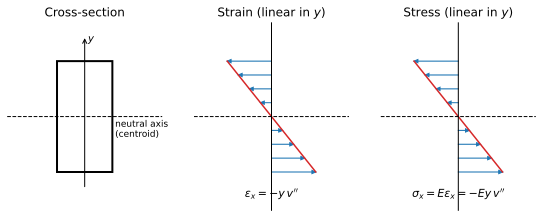
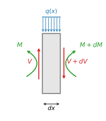

Euler-Bernoulli Beam Theory: the Missing Link
From the linear cross-section stress distribution to \(q(x) = \frac{d^2}{dx^2}(EI\,\frac{d^2v}{dx^2})\) — Section 1.4.2 companion
In lecture we jump from “plane sections remain plane” straight to \(M = EI\,v''\). This page fills in every step of that jump.
Step 1 — Kinematics: plane sections remain plane
A cross-section at \(x\) rotates with the slope of the deflected axis but stays flat and perpendicular to it. A fiber at height \(y\) above the neutral axis therefore displaces axially by
$$u(x,y) = -y\,v'(x)$$Differentiating along the beam gives the axial strain — linear in \(y\):
$$\varepsilon_x(x,y) = \frac{\partial u}{\partial x} = -y\,v''(x)$$Step 2 — Constitutive law: linear elasticity
$$\sigma_x(x,y) = E\,\varepsilon_x = -E\,y\,v''(x)$$So the stress is also linear over the depth: compression on one side of the neutral axis, tension on the other.

Step 3 — Resultants: integrate the stress over the cross-section
Axial force (must vanish for pure bending):
$$N(x) = \int_A \sigma_x\,dA = -E\,v''(x)\int_A y\,dA = 0 \;\;\Longrightarrow\;\; \int_A y\,dA = 0$$This is why the neutral axis passes through the centroid. Bending moment (sagging positive):
$$M(x) = -\int_A y\,\sigma_x\,dA = E\,v''(x)\underbrace{\int_A y^2\,dA}_{I} = EI\,v''(x)$$The linear stress distribution is exactly what makes the moment proportional to curvature — and the constant of proportionality is \(EI\): \(E\) from the material, \(I = \int_A y^2\,dA\) from the cross-section geometry.
Step 4 — Equilibrium of a differential element

Vertical force balance and moment balance about the right face (dropping the second-order term \(q\,dx\cdot dx/2\)):
$$\frac{dV}{dx} = q(x), \qquad \frac{dM}{dx} = V(x)$$Step 5 — Combine: the beam equation
$$q = \frac{dV}{dx} = \frac{d^2M}{dx^2} = \frac{d^2}{dx^2}\!\left(EI\,\frac{d^2v}{dx^2}\right)$$which is Eq. (1.1) of the lecture notes. For constant \(EI\):
$$EI\,\frac{d^4v}{dx^4} = q(x)$$The full chain at a glance
| Quantity | Expression | Comes from |
|---|---|---|
| displacement | \(u = -y\,v'\) | plane sections (kinematics) |
| strain | \(\varepsilon_x = -y\,v''\) | derivative of \(u\) |
| stress | \(\sigma_x = -Ey\,v''\) | Hooke's law |
| moment | \(M = EI\,v''\) | \(-\int_A y\,\sigma_x\,dA\) |
| shear | \(V = EI\,v'''\) | \(dM/dx\) (element equilibrium) |
| load | \(q = EI\,v''''\) | \(dV/dx\) (element equilibrium) |
Assumptions used, and where: plane sections ⊥ axis (Step 1), linear elastic material (Step 2), small rotations throughout, constant \(EI\) only in the final simplification.